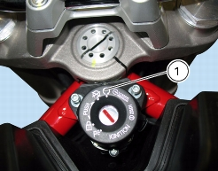
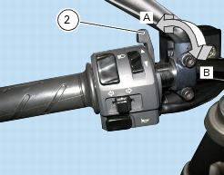
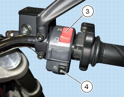

2 -
Starting - Engine warmup
Starting the engine
Normal ambient temperature
(between
10
°C/
50
°F and
35
°C/
95
°F)
Turn the ignition switch to position (1). Check that both the green
N
light and the red light on the instrument panel come on (Sect. P 7,
Instrument panel system
).

Shift the cold-start lever (2) to position (B). Make sure that the stop switch (3) is in the RUN position, then press the starter
button (4). Allow the engine to start on its own, without turning the throttle twistgrip.
Wait until the oil temperature reaches 75
°C.
Shift the cold-start lever to the vertical position (A).


Important
The oil pressure warning light should go out a few seconds after the engine has started. If the light stays on, stop the engine and
check the oil level (Sect. P 7,
Instrument panel system
).
Never start the engine when the oil pressure is too low.
Important
Do not run the engine at high speed when cold. Allow some time for the oil to warm up and reach all points that need lubricating.
Warning
The engine can be started with the sidestand down and the gearbox in neutral. When starting the engine with a gear engaged,
pull in the clutch lever (in this case the sidestand must be in the raised position).
Subsequently, move the cold start lever (2) gradually towards its vertical position as the engine warms up.
Once the engine is at normal running speed it should idle smoothly with the cold start lever completely closed.
High engine temperature
(over
35
°C/
95
°F – ambient temperature)
Follow the same procedure but without using the cold start control (2).
Notes
Follow the “High ambient temperature” procedure to start the engine when it is already warm.
Cold ambient temperature
(below
10
°C/
50
°F)
Follow the procedure for “Normal ambient temperature”, but allow up to 5
minutes for the engine to warm up (point 5), until the second mark is displayed on the instrument panel.